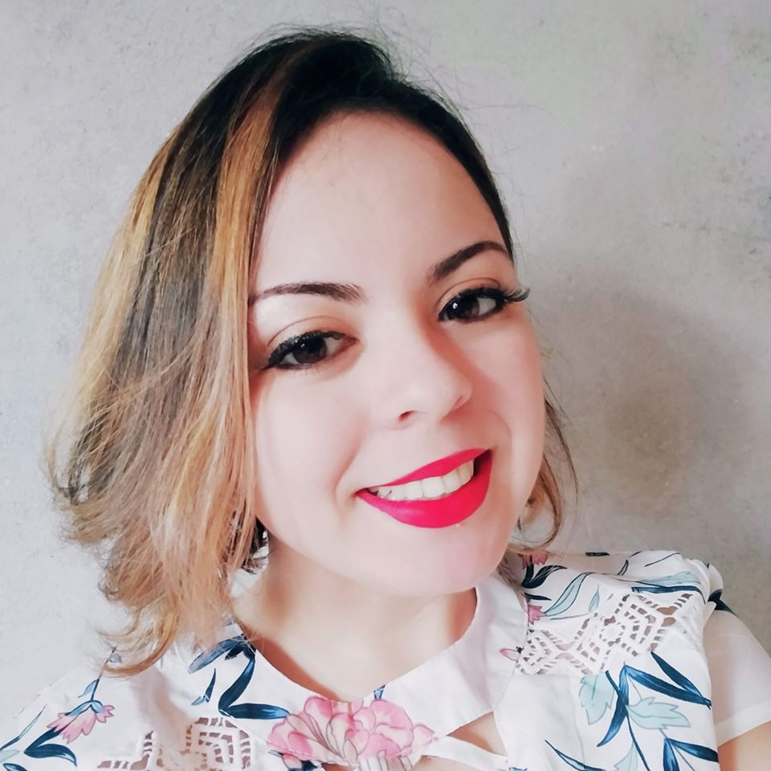

Olá, Mundo.
Eu sou a Bruna Souza dos Santos da Silva, biomédica e no momento estou trabalhando na linha de frente para fazer exames relacionados ao coronavirus, admito que os dias estão mais cansativos que o normais, porém seguimos com esperanças e que todos fiquem em suas casas.
Decidi imigrar para outra área justamente pelo sucadiamento da minha profissão e não a valorizam isso do governo e até pela propria população, ainda assim tenho projetos de unir a biomedicina com a tecnologia e melhorar o bem-estar das mulheres.
Coisas que eu gosto de fazer:
- Ler, principalmente coisas relacionadas a antropologia e neurobiologia
- Ir a parques
- Assistir documentários de caracter investigativo
Coisas que eu tenho medo:
- Solidão
- Não ter expectiva de vida
- A frieza das pessoas aumentar para com o próximo
Para que possam me conhecer melhor acessem:
Linkedin da Bruna
